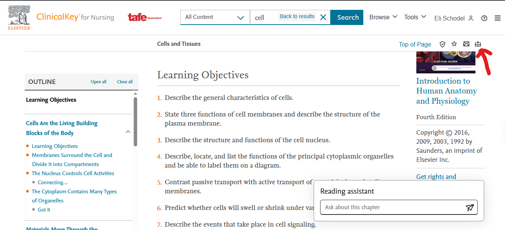
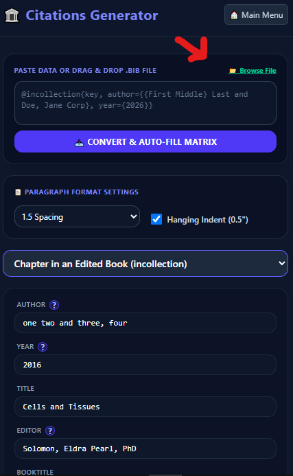

Download Your Reference
First, download your reference. At the top of most sources, a button (shown in the image below) lets you download the details you need for your reference (such as the authors' names, the editors' names, the book title, etc.).

Upload the File
Once you've downloaded the file, upload it to my app. This will automatically fill in the fields. Double-check the publisher, as most .bib files (which you just downloaded) do not include it. Also double-check that the edition is written correctly (e.g., the field says '4th' instead of 'fourth' or 'fourth edition').
Authors and editors should fix themselves correctly; however, titles will not. Currently, titles are inserted exactly as they appear in the .bib file, but they may not always be written correctly. Make sure they are in sentence case. I will add a feature that does this for you, but for now you'll need to do it yourself.

Copy Your Citation
This is it. Copy it and make sure the formatting in Word matches the generator's formatting.